SmartTools アドオン解説書
SmartShader Suite（スマートシェーダー スイート） 解説書
版 1.0.0 ／ 2026年11月18日 ／ Blender 5.1.2 用
SmartShader Suite は、Blender のマテリアル作業をサイドバー（N パネル）の「Smart Shader」タブに集めたアドオンです。マテリアルとは、物の色・つや・凹凸など、見た目を決める設定のことです。プリセットから素早くマテリアルを作る、アニメ風のトゥーンマテリアルを作る、テクスチャ（画像）一式から自動で組み立てる、シーン内のマテリアルを整理・置き換える、HDRI で照明を作る、壊れた所を点検・修復する、といった作業ができます。パネルは見出しごとに折りたたまれています。使う見出しだけを開いて作業します。各見出しの右端の「？」を押すと、その見出しの説明が出ます。
矢印を動かして、トゥーンの影を左へ
矢印のEmptyを左へ動かして方向を同期すると、同じ材質の陰側が変わります。モデルのどちら側に影を置くかを目で決められます。
- 矢印を左へ
- 方向を同期
- 同じ材質の陰側が変化
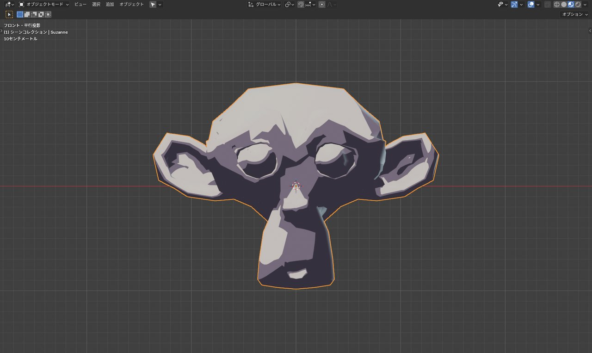
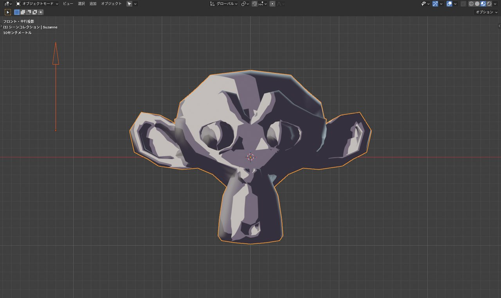
トゥーンの材質を作った後の影の演出に向きます。照明の見え方を選ぶとき、矢印の向きと陰側を同時に確認できます。 比較対象の資料 · Cycles Tooner
試す前に 作例のトゥーン材質を使い、矢印を選んで方向を同期する。
1. このアドオンでできること
マテリアル（物の見た目の設定）の作成、トゥーン化、テクスチャの取り込み、整理、点検を、サイドバーの 1 つのタブからまとめて行うアドオンです。
- プリセット（あらかじめ用意された見た目の組み合わせ）を見本画像で選んで、新しいマテリアルを作れます。
- 1 枚の写真から、凹凸や粗さの下地になる画像を作り、マテリアルを組み立てられます。
- アニメ風のトゥーンマテリアル（「スマート トゥーン」）を作り、影の段階・ハイライト・リムライトを調整できます。
- 摩耗・錆・苔・雪・濡れ・埃などのレイヤーを、元のマテリアルを作り直さずに重ねられます。
- フォルダの中のテクスチャ一式を見分けて、マテリアルを自動で組み立て、配線できます。
- リンク切れの画像（場所が分からなくなった画像）を、フォルダから探して付け直せます。
- マテリアルをスロット（よく使うマテリアルを置いておく枠）に並べて、選択中の物へすぐ割り当てられます。
- シーン内のマテリアルを一覧・比較・置き換えし、名前の条件で一括割り当てするルールを保存できます。
- HDRI 画像で、周りの景色と照明をまとめて作れます。
- マテリアルの点検・一括修復・未使用データの掃除をし、結果をレポートで確認できます。
- マテリアルを画像ごと ZIP にまとめて、別の PC やファイルへ受け渡せます。
- キャラクターの服や小物に、プリセットからすぐ見た目を付けたい時。
- キャラクターをアニメ風の段階影で塗りたい時。
- ダウンロードしたテクスチャ一式から、手で配線せずにマテリアルを作りたい時。
- ファイルを移動して画像がピンク色（リンク切れ）になった時。
- 似たマテリアルが増えすぎたシーンを整理したい時。
- 見た目の確認用に、HDRI の照明をすぐ用意したい時。
ひと目で分かる例
このアドオンを使うと、画面は次のように変わります。くわしい操作は 5 章の各機能の「実例」で説明します。
実例1 回のボタンで「錆びた塗装」の材質を作る（スザンヌで試した様子）
材質のノードを一から組まなくても、プリセットを選んで「プリセットルックマテリアル作成」を押すと、出来上がった材質が作られ、選んでいる物に貼られます。

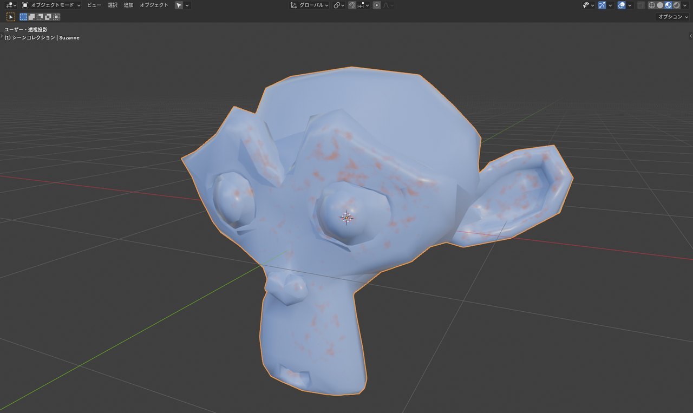
- スザンヌを選ぶ
- 「Smart Shader」タブ ＞「PBRマテリアル生成」を開く
- 「プリセットカテゴリ」を「FX・ウェザリング」にする
- 「プリセット」で「ラステッドペイント」を選ぶ
- 「プリセットルックマテリアル作成」を押す
見どころ：薄い灰色だった表面が、薄い青の塗装の上に赤茶色の錆の斑点がうっすら浮いた見た目に変わりました（目のまわりや耳に多く出ています）。ノードはプリセットが組んだ物なので、あとからシェーダーエディターで色などを調整できます。
実例アニメ調の陰影にする「トゥーンマテリアルを作成」（スザンヌで試した様子）
なめらかな陰影ではなく、アニメのような段のはっきりした陰影の材質を作ります。
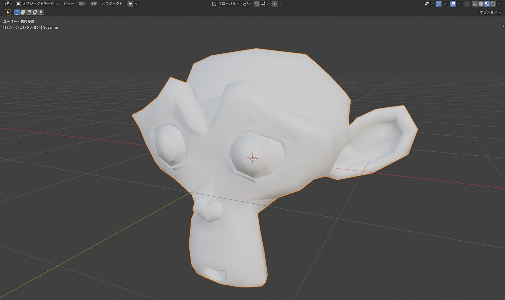
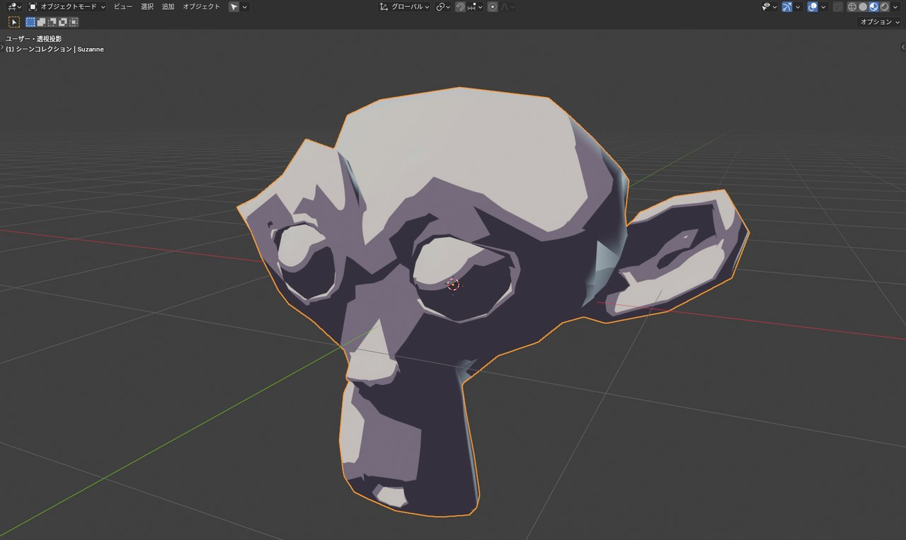
- スザンヌを選ぶ
- 「Smart Shader」タブ ＞「スマート トゥーン」を開く
- 「トゥーンマテリアルを作成」を押す
見どころ：なめらかに暗くなっていた陰が、明るい所・中間・暗い所の段にはっきり分かれました。ハイライトやリムライトの量は同じ見出しの中の「ハイライト」「リムライト」の欄で変えられます。
2. 目玉の機能
このアドオンならではの機能を、図に番号を付けて説明します。図の中の番号と、図の下の一覧の番号が対応しています。図を押すと大きく表示されます。設定の一つ一つは 5 章の各見出しで説明します。
2-1. PBR/FX プリセットの画像一覧いちばんの売り
「PBRマテリアル生成」の「プレビュー画像から選択」を押すと、PBR・スタイライズ・FX の全 242 種のプリセットが、スザンヌに材質を付けた見本画像で並びます。見本画像はアドオンに同梱されているので、開いてすぐ全部を見比べられます。画像を押すと、そのプリセットでマテリアルが作られて選んでいる物に貼られ、一覧が閉じます。名前を知らなくても、見た目だけで材質を選べます。
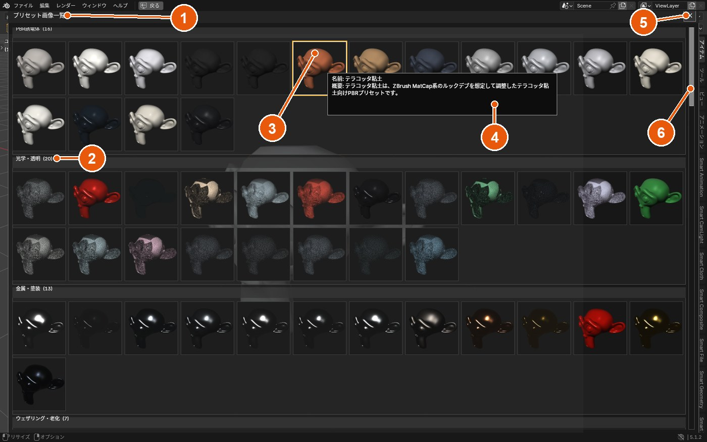
- 1画像一覧：全 242 種がジャンルごとに並ぶ
- 2ジャンルの見出し：ここから下が次のジャンル
- 3見本の画像：押すとこのプリセットでマテリアルが作られ、選んでいる物に貼られる
- 4名前と概要：マウスを置いた画像の名前と説明
- 5閉じる：Esc キーや右クリックでも閉じる
- 6スクロールバー：マウスホイールでも動く
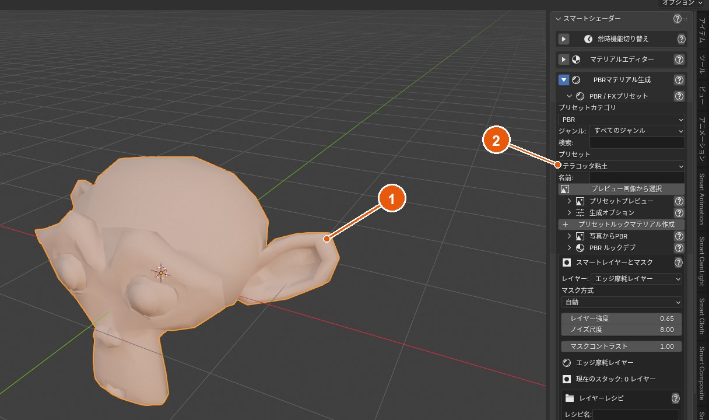
- 1貼られたマテリアル：押した画像のプリセットで作られた
- 2「プリセット」の欄：押した画像のプリセットに切り替わっている
- マテリアルを付けたい物を選ぶ（2 つ以上選んでもよい）。
- 「PBRマテリアル生成」を開き、「プレビュー画像から選択」を押す。
- 一覧で見本の画像を押す。その場でマテリアルが作られて貼られ、一覧が閉じる。
- 一覧は、「プリセットカテゴリ」「ジャンル」「検索」の絞り込みに関係なく、いつも全 242 種を出す。
- 見本画像は同梱なので、画像を作る待ち時間なしで開ける。
- 画像を押した時点でマテリアルができている。「プリセットルックマテリアル作成」を押し直すと、同じマテリアルがもう 1 つできる。
- 2 つ以上の物を選んでいれば、全部にまとめて貼られる。
- 「プリセットプレビュー」の中の「画像一覧」は、プリセットを選ぶだけで、マテリアルは作らない。
くわしい設定：5-3. PBRマテリアル生成
2-2. 検索で候補を絞る図で見る
名前や材質の種類が分かっている時は、「検索」に言葉を入れると、「プリセット」のドロップダウンに出る候補が絞られます。検索は、プリセットの名前・概要・タグ・ジャンル名を、日本語でも英語でも探します。図は「金属」と入れた所です。なお、画像一覧そのものには検索がありません。検索で絞れるのは「プリセット」のドロップダウンの候補です。
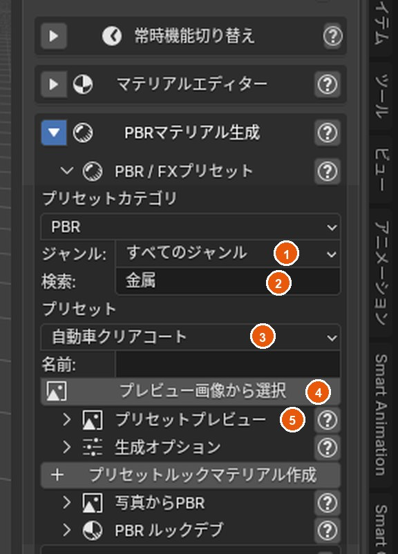
- 1ジャンル：候補を種類で絞る
- 2検索：言葉で候補を絞る
- 3プリセット：絞った候補から選ぶドロップダウン
- 4プレビュー画像から選択：全 242 種の画像一覧を開く
- 5プリセットプレビュー：選んだプリセットの見本画像
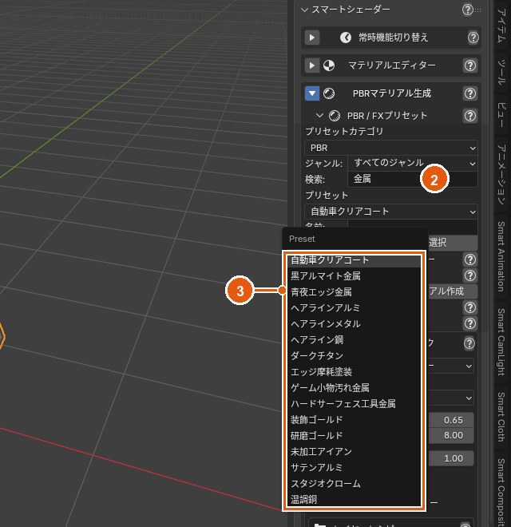
- 2検索の欄：「金属」と入れた
- 3絞られた候補：名前や説明に「金属」を含むプリセットだけが並ぶ
- 「検索」に言葉を入れる（例：金属、wood）。
- 「プリセット」のドロップダウンを開き、絞られた候補から選ぶ。
- 「プリセットルックマテリアル作成」を押す。
くわしい設定：5-3. PBRマテリアル生成
2-3. スマート トゥーン図で見る
「トゥーンマテリアルを作成」を押すと、選んだ物がアニメ風の段階影になります（上の 2 枚）。影の向きは、ライトの代わりに置く Empty の場所で決まります（下の 2 枚）。Empty の矢印の向きは関係ありません。Empty を動かした後は「選択から方向を同期」を押し直します。

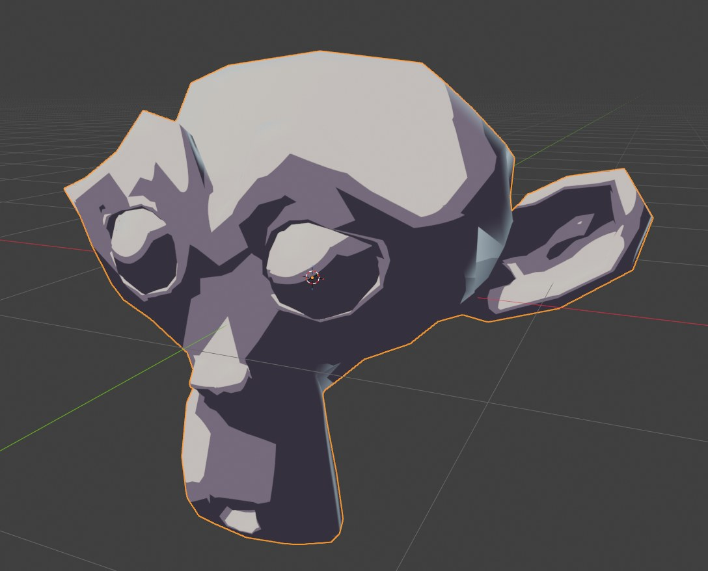
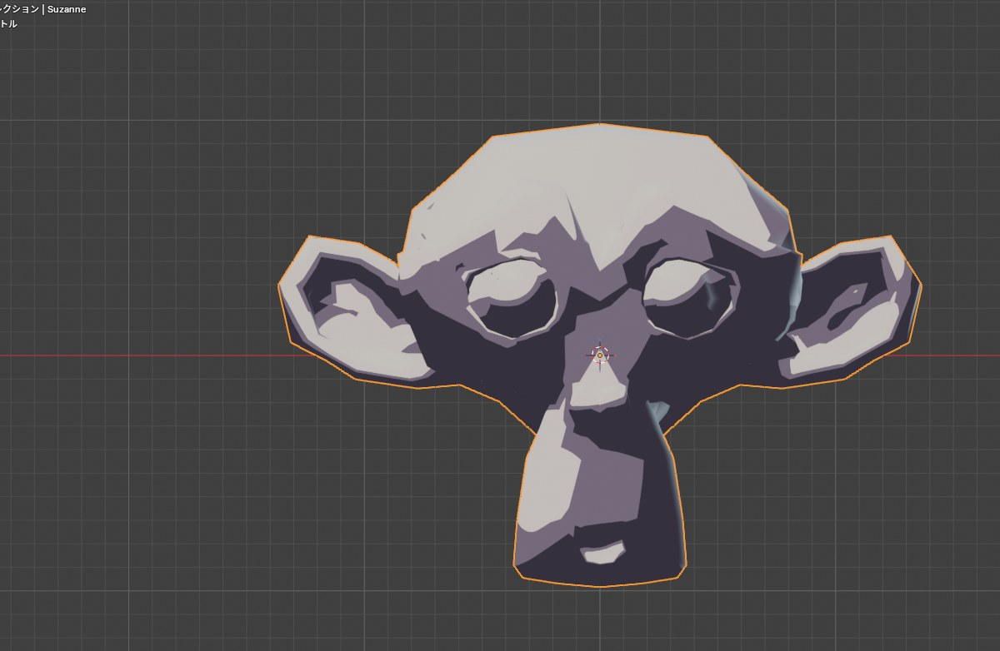
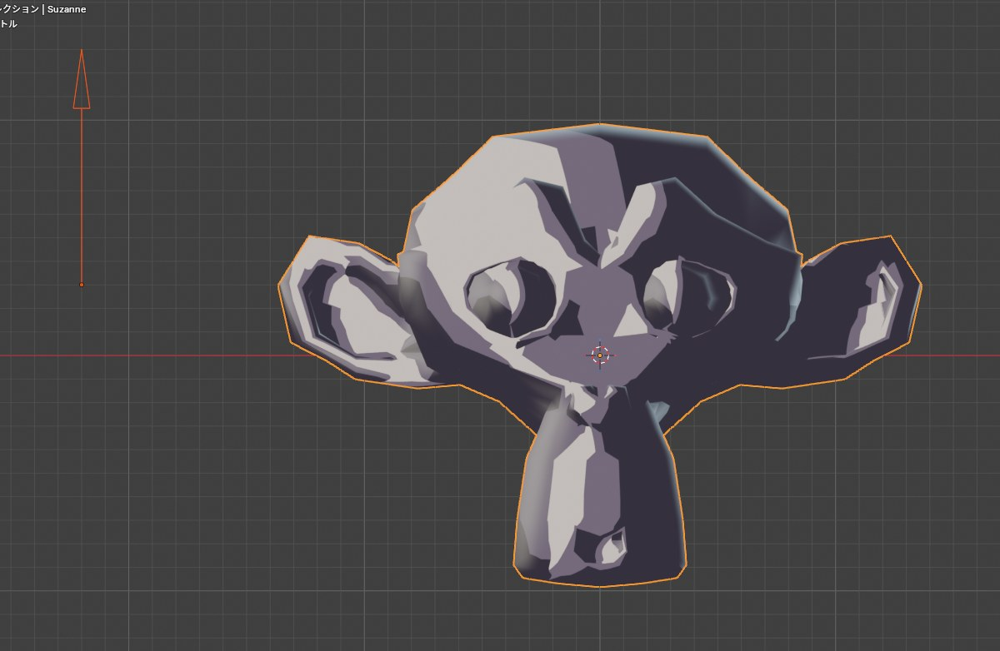
くわしい設定：5-4. スマート トゥーン
2-4. 3ds Max 風マテリアルエディター図で見る
よく使うマテリアルをスロット（棚）に並べておき、選んだ物へボタン 1 つで貼れます。3D ビューで物を押して、その面のマテリアルをスロットに取り込むこともできます。図 1 は縦に長いパネルを 2 列に折って並べたものです（左の列の下に右の列が続きます）。
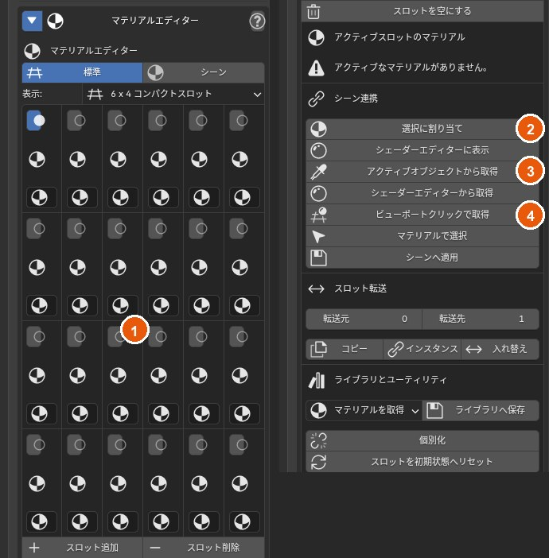
- 1棚：既定は 6×4 の 24 枠。「表示」で 3×2・5×3・無制限のリストにも変えられる
- 2選択に割り当て：オブジェクトモードでは選んだ物のアクティブなスロットへ、編集モードでは選んだ面へ貼る
- 3アクティブオブジェクトから取得：アクティブな物のマテリアルを、今のスロットへ取り込む
- 4ビューポートクリックで取得：押した後に 3D ビューで物を押すと、当たった面のマテリアルが今のスロットに入る
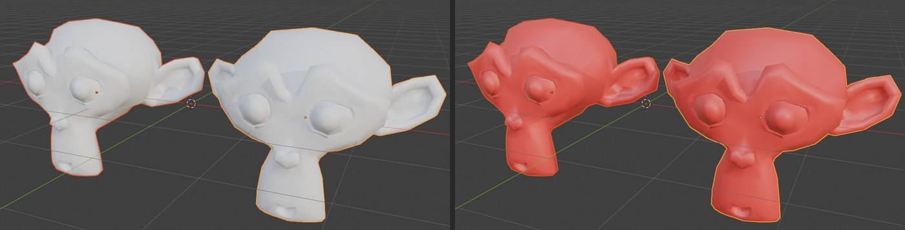
- 棚でスロットを押して、貼りたいマテリアルを選ぶ。
- 3D ビューで、貼りたい物（編集モードなら面）を選ぶ。
- 「選択に割り当て」を押す。
くわしい設定：5-2. マテリアルエディター
3. 準備
アドオンの入れ方・画面を日本語にする方法・N パネルと「？」ヘルプの共通の使い方は、「SmartTools 全体仕様書」にまとめています。先にそちらの 2〜5 章を読んでください。
| 入れる ZIP | SmartShaderSuite_1.0.0.zip |
|---|---|
| Blender の画面での名前 | Smart Shader |
| 動く Blender | 5.1.2 |
4. 画面の場所
3D ビューのサイドバー（N パネル）の「Smart Shader」タブにあります。同じパネルは、シェーダーエディター、画像エディター、ビデオシーケンサー、ムービークリップエディター、ドープシート、グラフエディター、NLA エディター、テキストエディター、ファイルブラウザー、スプレッドシートのサイドバーにも出ます。
| 出る画面 | 3D ビューポート、ノードエディター、画像エディター（UV エディター）、ビデオシーケンサー、動画クリップエディター、ドープシート、グラフエディター、NLA エディター、テキストエディター、ファイルブラウザー、スプレッドシート |
|---|---|
| タブ | Smart Shader |
| モード | オブジェクトモード |
- 3D ビューで N キーを押して、サイドバーを開きます（開き方の詳細は全体仕様書の「N パネルの開き方」の章を見てください）。
- サイドバーの右端に縦に並ぶタブから「Smart Shader」を押します。
- 使いたい見出しの左の三角を押して開きます。見出しの右端の「？」で、その見出しの説明が出ます（「？」ヘルプの使い方は全体仕様書の「？ヘルプ」の章を見てください）。
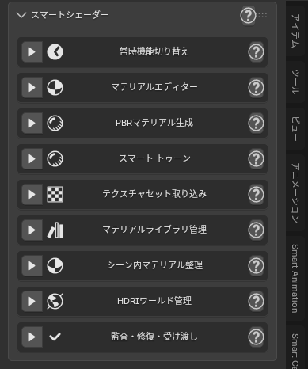
5. 機能の説明
画面の上から順に、見出しごとに説明します。見出しの右の「？」を押すと、同じ内容の説明が画面にも出ます。青い枠の「実例」は、スザンヌなどの簡単なモデルで実際に操作し、3D ビューでの変化を前と後で並べたものです。
5-1. 常時機能切り替え
ボタンを押さなくても裏で動き続ける機能だけを、ここでまとめてオン・オフします。必要な時だけオンにします。
場所パネルのいちばん上の見出しです。左の三角で開きます。
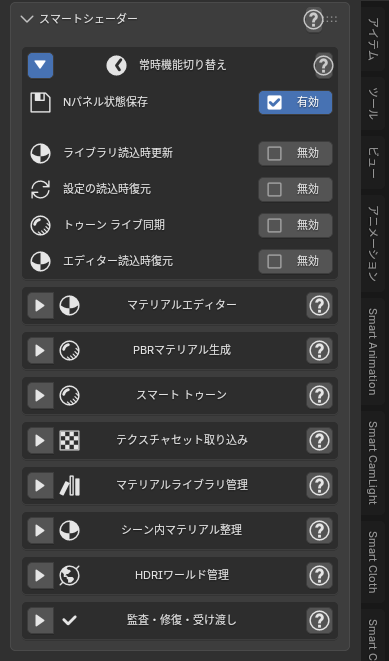
| 表示 | 働き |
|---|---|
| Nパネル状態保存 | パネルの設定の変更を、Blender の設定フォルダの中のファイルへすぐ保存します。オフにすると、その後は自動で書き込みません。 |
| ライブラリ読込時更新 | .blend ファイルを開いた後に、マテリアルライブラリの一覧を自動で更新します。オフのままの方が、起動とファイルを開くのが軽くなります。 |
| 設定の読込時復元 | ファイルを開いた時に、機能ごとの設定を戻します。「Nパネル状態保存」でも同じ設定が戻るので、通常はオフのままで構いません。 |
| トゥーン ライブ同期 | スマート トゥーンの同期処理を裏で動かし続けます。オフでも、ボタンで行う再構築やレンダーの準備は使えます。 |
| エディター読込時復元 | ファイルを開いた後に、マテリアルエディターの設定と名前の付いたスロットを自動で戻します。 |
5-2. マテリアルエディター
よく使うマテリアルをスロットに並べておき、選んだ物へすぐ割り当てる道具です。シーン内のマテリアルを一覧で探すこともできます。
場所「常時機能切り替え」のすぐ下の見出しです。
| 表示 | 働き |
|---|---|
| 「標準」／「シーン」 | 上のタブで表示を切り替えます。「標準」はスロットの画面です。「シーン」は、シーンの物が使っているマテリアルの一覧です。 |
| スロット初期化 | スロットがまだ無い時だけ出ます。押すとスロットが作られます。 |
| 表示 | スロットの並べ方を選びます。「3 x 2 コンパクトスロット」「5 x 3 コンパクトスロット」「6 x 4 コンパクトスロット」「無制限リスト」があります。 |
| スロットの番号ボタン | 各スロットの左上の丸いボタンを押すと、そのスロットが選ばれます。パネルの幅が広い時は、ボタンに番号（01、02…）も出ます。下の欄で、スロットに入れるマテリアルを選べます。 |
| スロット追加／スロット削除／スロットを空にする | スロットを増やす、減らす、中身のマテリアルを外す、の 3 つです。 |
| アクティブスロットのマテリアル | 選んでいるスロットのマテリアル名・状態・ユーザー数（使っている数）を表示します。名前のボタンを押すと名前を変えられます。 |
| エフェクトチャンネルID | マテリアルのパスインデックス（0〜15 の番号）を設定します。合成作業で、マテリアルごとに切り分ける時に使います。 |
| シーン連携 | 「選択に割り当て」で、選んでいるスロットのマテリアルを選択中の物へ貼ります。「シェーダーエディターに表示」でノードを開き、「アクティブオブジェクトから取得」「シェーダーエディターから取得」「ビューポートクリックで取得」でスロットへ取り込みます。「マテリアルで選択」は同じマテリアルを使う物や面を選び、「シーンへ適用」はシーンへ戻します。 |
| スロット転送 | 「転送元」と「転送先」のスロット番号を選び、「コピー」「インスタンス」（同じマテリアルを共有）「入れ替え」をします。 |
| ライブラリとユーティリティ | 「マテリアルを取得」「ライブラリへ保存」（.blend ファイルとして保存）「個別化」（共有をやめて自分専用のコピーにする）「スロットを初期状態へリセット」があります。 |
| 「シーン」タブ | 「シーンのマテリアル」に、シーンで使っているマテリアルが名前と使っている数の付いた一覧で出ます。名前は訳されず、付けたままで出ます。上の欄で検索と並べ替えができます。一覧で選ぶと、「選択中のマテリアル」に「アクティブスロットへ入れる」「シェーダーエディターに表示」が出ます。「このマテリアルを使用しているオブジェクト」では、使っている物を 1 つずつ、または「このマテリアルを使用中のすべてのオブジェクトを選択」でまとめて選べます。この画面の図は、5 章の終わりの「そのほかの画面」にあります。 |
- スロットの番号ボタンを押して、使いたいスロットを選びます。
- 割り当てたい物を 3D ビューで選びます。
- 「シーン連携」の「選択に割り当て」を押します。
実例スロットに置いた材質を、選んだ物へまとめて貼る（スザンヌ 2 つで試した様子）
よく使う材質をスロットに入れておくと、選んでいる物へボタン 1 つで貼れます。
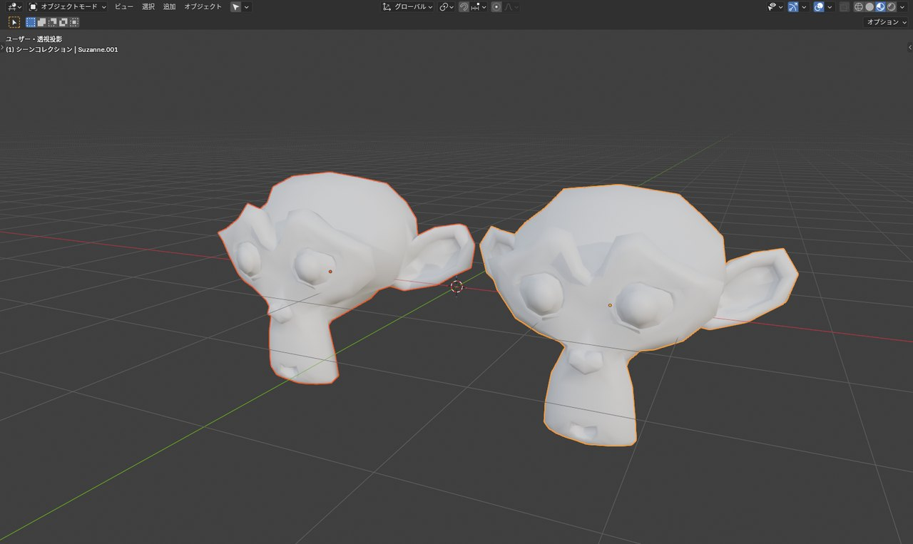
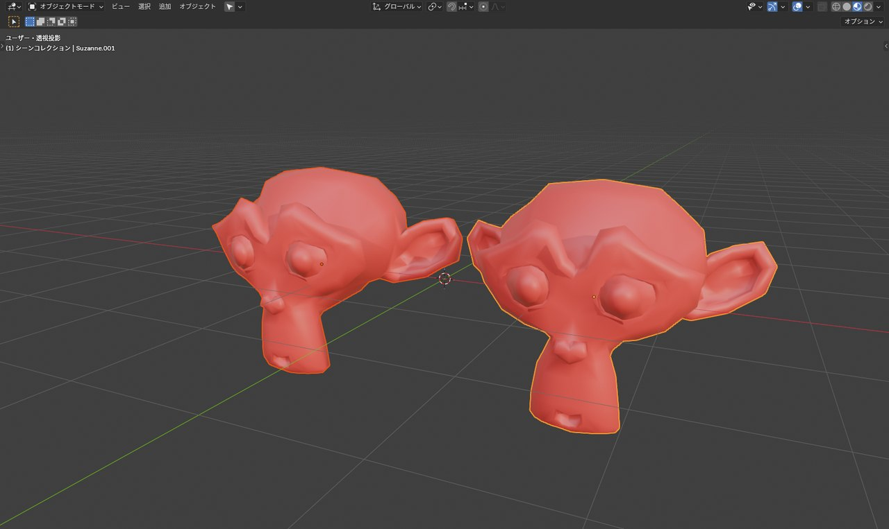
- 2 つのスザンヌを選ぶ
- 「Smart Shader」タブ ＞「マテリアルエディター」を開く（初めてなら「スロット初期化」を押す）
- スロットの番号ボタンを押してスロットを選び、下の欄で赤い材質を入れる
- 「シーン連携」の「選択に割り当て」を押す
見どころ：灰色だった 2 つのスザンヌが、どちらも同じ赤い材質になりました。材質は共有なので、あとで材質を直すと両方が変わります。
5-3. PBRマテリアル生成
PBR（現実の光の当たり方に近い見た目）や、スタイライズ・FX 系のプリセットからマテリアルを作ります。写真から下地画像を作る機能と、摩耗や錆などを重ねるレイヤーもここにあります。
場所「マテリアルエディター」の下の見出しです。開くと「PBR / FXプリセット」の欄と「スマートレイヤーとマスク」の箱（中に「レイヤーレシピ」）があります。
| 表示 | 働き |
|---|---|
| プリセットカテゴリ／ジャンル／検索 | 「プリセット」のドロップダウンに出す候補を絞る欄です。「検索」は、プリセットの名前・概要・タグ・ジャンル名を、日本語でも英語でも探します。「プレビュー画像から選択」の画像一覧は、ここでの絞り込みに関係なく、いつも全 242 種を出します。 |
| プリセット | 作るプリセットを選ぶドロップダウンです。上の欄で絞った候補だけが並びます。 |
| 名前 | 作るマテリアルの名前です。空なら、プリセットの名前が使われます。 |
| プレビュー画像から選択 | 全 242 種のプリセットの見本画像を並べた一覧を開きます。画像を押すと、そのプリセットでマテリアルが作られ、選んでいる物に貼られて、一覧が閉じます（「生成オプション」の「選択へ割当」がオフの時は、貼らずにアクティブなマテリアルにします）。「プリセットルックマテリアル作成」を押す必要はありません。 |
| プリセットプレビュー | 選んだプリセットの見本画像（スザンヌに材質を付けた画像）が出る欄です。ここの「画像一覧」で画像を押すと、プリセットが選ばれるだけで、マテリアルは作られません。「プリセットプレビュー生成」は見本画像を作り直します。初めは閉じています。 |
| 生成オプション | 「選択へ割当」（作った後に選択中の物へ貼る）、「保持」（使っていなくても保存時に消えないようにする）、「アセット化」（アセットブラウザーで使える形にする）を切り替えます。物にマテリアルの枠が 2 つ以上ある時は「適用スロット」のボタンも出ます。初めは閉じています。 |
| プリセットルックマテリアル作成 | 「プリセット」の欄で選んだプリセットで、新しいマテリアルを作ります。「選択へ割当」がオンなら、そのまま選んでいる物に貼られます。「プレビュー画像から選択」の一覧で画像を押した時は、もう作られているので押しません（押すと同じマテリアルがもう 1 つできます）。 |
| 写真からPBR | 「写真ソース」「生成先フォルダ」「解析解像度上限」「法線強度」「細部強調」を設定して「写真PBR作成」を押すと、1 枚の写真から下地の画像を作り、マテリアルを組み立てます。初めは閉じています。 |
| PBR ルックデブ | 同梱機能の 1 つです。開くと、初めは「読み込み」ボタンだけが出ます。押すと使えるようになります。 |
| スマートレイヤーとマスク | 「レイヤー」「マスク方式」「レイヤー強度」「ノイズ尺度」「マスクコントラスト」を選んで「レイヤー適用」を押すと、摩耗・錆・苔・雪・濡れ・埃などをマテリアルに重ねます。重ねる先は選んでいる物の今のマテリアルです（物にマテリアルが無い時だけ「対象マテリアル」のマテリアルに重ねます）。下の行に今のレイヤーの数が出ます。「マスクユーティリティ追加」は、見た目を変えずに、手で調整するための補助ノードを足します。 |
| レイヤーレシピ | 重ねたレイヤーの組み合わせを「レシピ名」で保存し（「レシピ保存」）、「保存済みレシピ」で選んで別のマテリアルへ「レシピ適用」できます。「レシピ削除」や、「レシピライブラリ書出し」「レシピライブラリ読込」「レシピライブラリ修復」もあります。 |
- マテリアルを付けたい物を選びます。2 つ以上選んでもかまいません。
- 「プレビュー画像から選択」を押し、一覧で見本の画像を押します。その場でマテリアルが作られて選んだ物に貼られ、一覧が閉じます（「プリセットルックマテリアル作成」は押しません）。
- 名前で探す時は、「検索」に言葉を入れて「プリセット」の候補を絞り、選んでから「プリセットルックマテリアル作成」を押します。
実例1 回のボタンで「錆びた塗装」の材質を作る（スザンヌで試した様子）
材質のノードを一から組まなくても、プリセットを選んで「プリセットルックマテリアル作成」を押すと、出来上がった材質が作られ、選んでいる物に貼られます。
- スザンヌを選ぶ
- 「Smart Shader」タブ ＞「PBRマテリアル生成」を開く
- 「プリセットカテゴリ」を「FX・ウェザリング」にする
- 「プリセット」で「ラステッドペイント」を選ぶ
- 「プリセットルックマテリアル作成」を押す
見どころ：薄い灰色だった表面が、薄い青の塗装の上に赤茶色の錆の斑点がうっすら浮いた見た目に変わりました（目のまわりや耳に多く出ています）。ノードはプリセットが組んだ物なので、あとからシェーダーエディターで色などを調整できます。
実例金属の質感「ヘアラインメタル」を貼る（スザンヌで試した様子）
写実的な PBR のプリセットも同じ手順で作れます。ここではヘアライン加工（細い筋を付けた仕上げ）の金属の材質を貼ります。

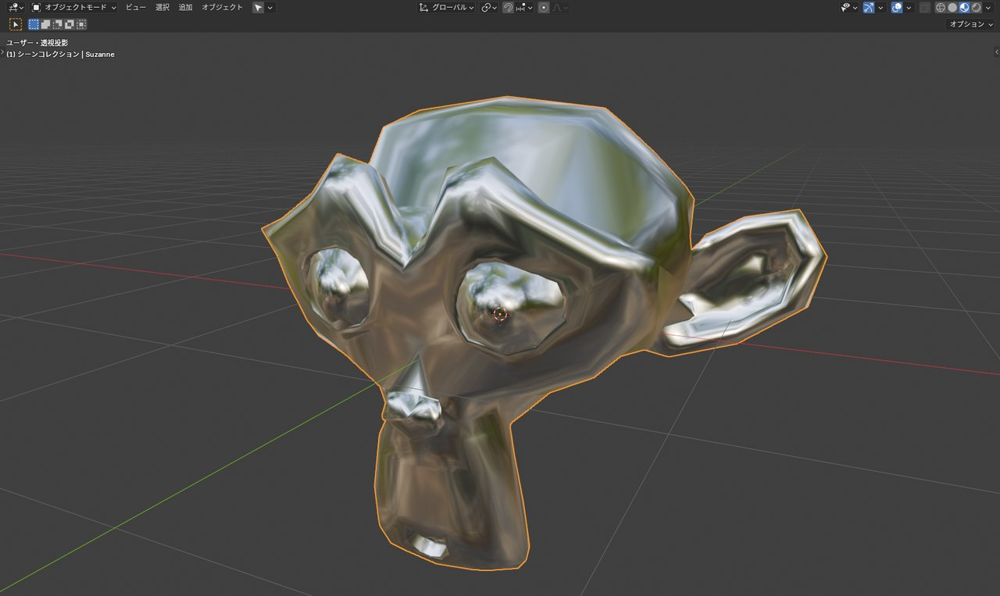
- スザンヌを選ぶ
- 「Smart Shader」タブ ＞「PBRマテリアル生成」を開く
- 「プリセットカテゴリ」を「PBR」にする
- 「プリセット」で「ヘアラインメタル」を選ぶ
- 「プリセットルックマテリアル作成」を押す
見どころ：薄い灰色だった表面が金属になり、マテリアルプレビューの周りの景色が映り込むようになりました。
実例ホログラムのような見た目「ホログラムフィルム」（スザンヌで試した様子）
写実でない、演出向けの見た目もプリセットにあります。「スタイライズ」から選びます。

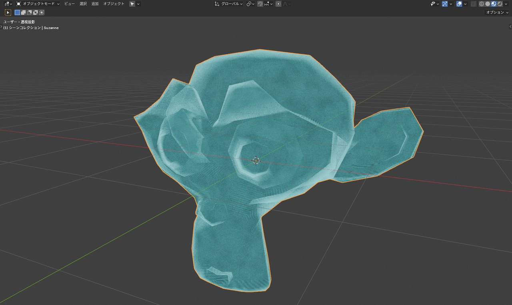
- スザンヌを選ぶ
- 「Smart Shader」タブ ＞「PBRマテリアル生成」を開く
- 「プリセットカテゴリ」を「スタイライズ」にする
- 「プリセット」で「ホログラムフィルム」を選ぶ
- 「プリセットルックマテリアル作成」を押す
見どころ：スザンヌが半透明の水色になり、ホログラムのような見た目になりました。
実例今の材質に雪を積もらせる「スマートレイヤー」（スザンヌで試した様子）
材質を作り直さずに、雪・錆・苔・埃などを上から重ねます。雪は上を向いた面に積もります。
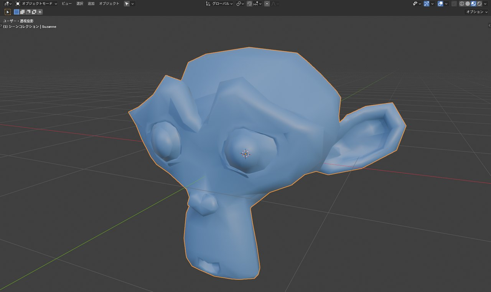
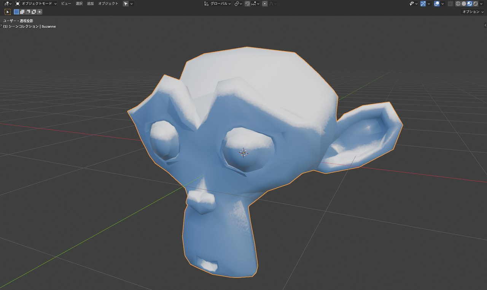
- スザンヌを選ぶ
- 「Smart Shader」タブ ＞「PBRマテリアル生成」＞「スマートレイヤーとマスク」を見る
- 「レイヤー」を「雪レイヤー」にする
- 「レイヤー強度」を 1.00 にする
- 「レイヤー適用」を押す
見どころ：頭の上、眉、耳のふちなど、上を向いた所だけが白くなりました。横や下を向いた所は、元の青のままです。「非破壊」がオンなので、元の材質は別に残り、スザンヌには雪を重ねたコピーが貼られます。
実例別の物を作った後でも、選んでいる物の今の材質にレイヤーが重なる（スザンヌ 2 つで試した様子）
左の物にプリセットの材質を作った後、右の物を選んで「レイヤー適用」を押します。レイヤーは、選び直した右の物の今の材質に重なります。
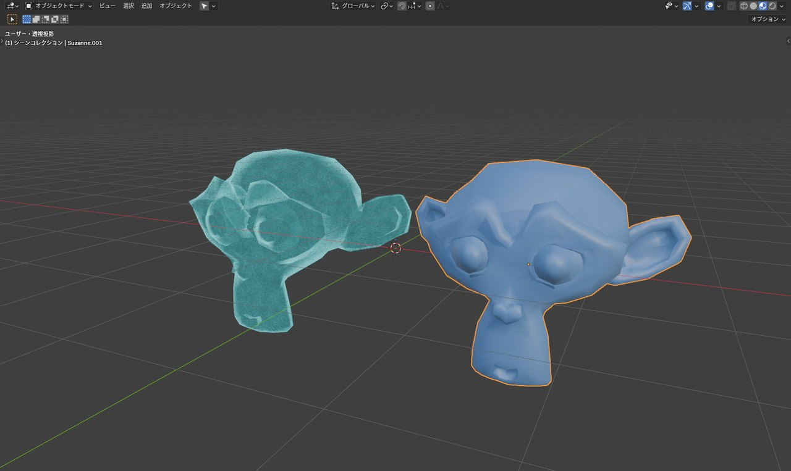
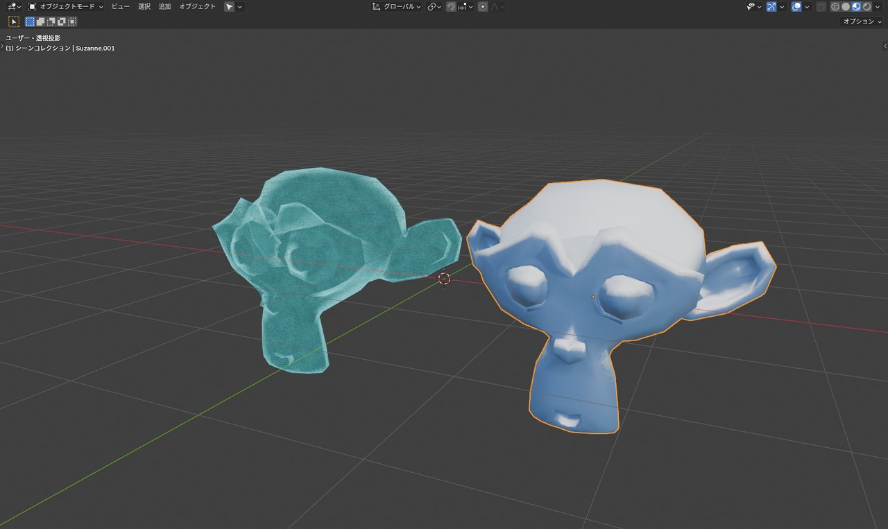
- 左のスザンヌを選び、「PBRマテリアル生成」でプリセットの材質を作る
- 青い材質の付いた右のスザンヌを選ぶ
- 「スマートレイヤーとマスク」の「レイヤー」を「雪レイヤー」にする
- 「レイヤー適用」を押す
見どころ：右のスザンヌは青いまま、上を向いた面だけが白くなりました。左のスザンヌの材質は変わりません。
5-4. スマート トゥーン
アニメ風の段階影のマテリアルを作って調整します。影の段階の色、ハイライト、リムライト（輪郭を光らせる光）、凹凸、照明の向き、落ち影をここで決めます。設定を変えると、生成されたシェーダーノードにすぐ反映されます。
場所「PBRマテリアル生成」の下の見出しです。マテリアルが無い時は「対象」の欄だけが出ます。
| 表示 | 働き |
|---|---|
| 対象 | 選んでいる物の名前と、今のマテリアルを表示します。「トゥーンマテリアルを作成」で新しいトゥーンマテリアルを作り、「シェーダーノードを再構築」でノードを作り直します。物にマテリアルの枠が 2 つ以上ある時は「適用スロット」のボタンも出ます。 |
| ベース | 「ベースソース」で、下地を「ゾーン色」にするか「PBR/FXプリセット」にするかを選びます。トゥーンでない PBR のマテリアルを選んでいる時は、代わりに「このPBRマテリアルにスマート トゥーン効果を追加」が出ます。 |
| ゾーンマップ | 「ゾーン数」で影の段階の数を決めます。「ゾーン境界シャープネス」で段階の境目のくっきり具合を、「ゾーンランプ」で色の帯を、「ゾーン境界」で段階の切り替わる位置を調整します。「ゾーン1 マップ」などの欄で、段階ごとの色（「ゾーン1 カラー」など）や画像を決めます。 |
| ノードを手動設定 | 「ゾーンマップ」「ハイライト」「リムライト」「バンプ」などの欄ごとにあるボタンです。オンにすると、その欄のノードはスマート トゥーンが自動で書き換えなくなり、シェーダーエディターで手で直せます。オフに戻すと、パネルの設定から作り直されます。 |
| ハイライト | 「ハイライトを有効化」でオンにし、ハイライトの色・範囲・強さを調整します。 |
| リムライト | 「リムライト数」で輪郭の光の数を決め、「リムライト 1」などの欄で 1 つずつ色や向きを設定します。個別のライトを使う方式にした時は「個別リムライト入力」が出て、「選択リムライトを使用」で Blender のライトを指定できます。 |
| バンプ | 「バンプを有効化」でオンにし、画像の凹凸でトゥーンの影を曲げます。「バンプ適用先」で、効かせる所を選びます。 |
| グラデーションオフセット | 「オフセットマップを有効化」でオンにし、画像を使って一部の範囲を暗い段階や明るい段階へずらします。「オフセット適用先」の「ゾーンカラーに適用」「ハイライトに適用」「リムライトに適用」で、効かせる所を選びます。 |
| ライティング | 「ライティング方式」の「ライティング入力」で、光の向きの決め方を「トゥーン方向」か「Blender標準ライティング」から選びます。「Blender標準ライティング」の時は「標準ライトオブジェクト」を指定するか「選択ライトを使用」を押します。「トゥーン方向」の時は「ライト方向」の欄が出ます。「方向用エンプティを作成」で矢印の Empty を作り、動かしてから「選択から方向を同期」を押すと、その向きから光が当たります（選んだサンライトやライトからも同期できます）。「出力」の「発光強度」で明るさを調整します。 |
| キャストシャドウ | ほかの物から落ちる影を、黒い影ではなく、ゾーンの段階の色として表示します。「標準ライトのキャストシャドウを使用」でオンにし、「影の範囲オフセット」で影として扱う範囲を広げ、「影のシャープネス」で境目のくっきり具合を決めます。キャストシャドウの再構築操作は、アクティブなスマート トゥーンマテリアルの受け側設定を有効にしてノードを更新します。シーンのレンダーエンジン・デバイス・ライト・オブジェクトの表示・ビューポート設定は変更しません。これらは Blender 側で確認・設定してください。 |
| コピー/ペースト | 「スマート トゥーン設定をコピー」で設定を写し、別のマテリアルを選んで「スマート トゥーン設定をペースト」で貼ります。「クリップボードをクリア」で写した内容を消します。何も写していない時は「クリップボードは空です。」と出ます。 |
- メッシュ（面でできた物）を選びます。
- 「対象」の「トゥーンマテリアルを作成」を押します。
- 「ゾーンマップ」で段階の数と色を決めます。
- 必要に応じて「ハイライト」「リムライト」を調整します。
実例アニメ調の陰影にする「トゥーンマテリアルを作成」（スザンヌで試した様子）
なめらかな陰影ではなく、アニメのような段のはっきりした陰影の材質を作ります。
- スザンヌを選ぶ
- 「Smart Shader」タブ ＞「スマート トゥーン」を開く
- 「トゥーンマテリアルを作成」を押す
見どころ：なめらかに暗くなっていた陰が、明るい所・中間・暗い所の段にはっきり分かれました。ハイライトやリムライトの量は同じ見出しの中の「ハイライト」「リムライト」の欄で変えられます。
実例矢印の Empty を動かして、トゥーンの陰の向きを変える（スザンヌで試した様子）
シーンのライトを使わなくても、Empty（形の無い目印）の位置から陰の向きを決められます。
- スザンヌを選び、「スマート トゥーン」の「トゥーンマテリアルを作成」を押す
- 「ライティング」＞「ライト方向」の「方向用エンプティを作成」を押す
- できた矢印の Empty を、光を当てたい方向へ動かす
- スザンヌも一緒に選び、「選択から方向を同期」を押す
見どころ：左に写っている矢印が、動かした Empty です。上から当たっていた光が、Empty のある左から当たる形に変わり、顔の右側が陰の色になりました。光の向きを決めるのは Empty の置き場所で、矢印の向きは関係ありません。Empty を動かしたら、もう一度「選択から方向を同期」を押します。
5-5. テクスチャセット取り込み
1 つのフォルダを起点に、テクスチャ一式からのマテリアル作成、リンク切れ画像の付け直し、色空間の補正、自動配線、未使用データの掃除を行います。
場所「スマート トゥーン」の下の見出しです。開くと「再リンクと掃除」の箱があります。
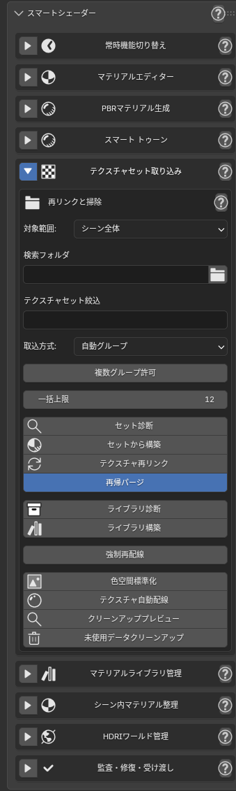
| 表示 | 働き |
|---|---|
| 対象範囲 | 「テクスチャ再リンク」などで処理するマテリアルの範囲を、「アクティブ」「ターゲット」「シーン全体」から選びます。 |
| 検索フォルダ | テクスチャを探すフォルダです。中のフォルダも探します。 |
| テクスチャセット絞込 | 大きなフォルダの中から、名前で 1 つのセットに絞り込むための文字です。 |
| 取込方式 | 「自動グループ」「絞込優先」「一致を全使用」から選びます。初めての人には「自動グループ」がいちばん安全です。 |
| 複数グループ許可／一括上限 | 複数のセットをまとめて扱うかどうかと、一度に作る数の上限です。 |
| セット診断／セットから構築 | 「セット診断」で、どの画像が選ばれるかを先に確かめます。「セットから構築」で、その一式から新しいマテリアルを作って配線し、選択中の物へ貼ります。 |
| テクスチャ再リンク | リンク切れの画像を、フォルダの中から同じファイル名で探して付け直します。 |
| ライブラリ診断／ライブラリ構築 | フォルダの中の複数のテクスチャセットを一覧にし、まとめてマテリアルを作ります。 |
| 強制再配線 | すでにつながっている所も配線し直すかどうかです。 |
| 色空間標準化 | 粗さや法線などのデータ用の画像を Non-Color（色として扱わない設定）に直します。 |
| テクスチャ自動配線 | 画像ノードの名前から用途を見分け、Principled BSDF（標準の材質ノード）へ足りない線をつなぎます。 |
| クリーンアッププレビュー／未使用データクリーンアップ | 使われていないマテリアル・画像・ノードグループを掃除します。先にプレビューで消える候補を確かめます。「再帰パージ」がオンなら、より深く掃除します。 |
- 「検索フォルダ」にテクスチャのあるフォルダを指定します。
- 「セット診断」を押し、選ばれる画像を確かめます。
- 「セットから構築」を押します。
実例テクスチャのフォルダから、配線済みの材質を作る（立方体で試した様子）
色・粗さ・法線などの画像が入ったフォルダを指定すると、どの画像が何かを名前から見分けて、材質を組み立てます。
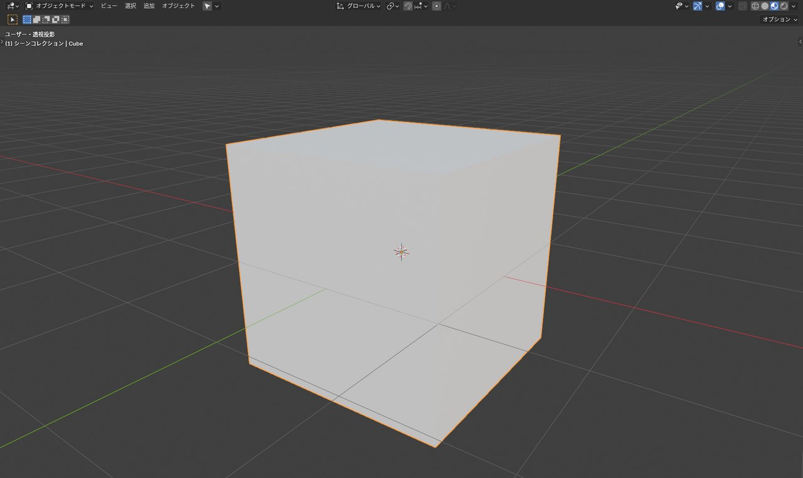
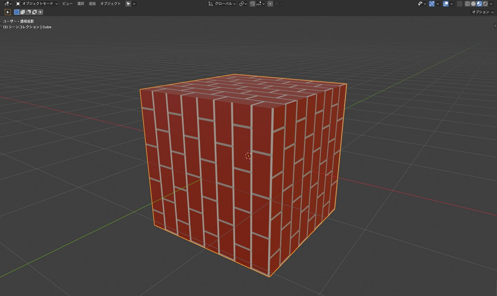
- 立方体を選ぶ
- 「Smart Shader」タブ ＞「テクスチャセット取り込み」を開く
- 「検索フォルダ」に画像のあるフォルダを指定する（ここでは名前の末尾が _basecolor・_roughness・_normal の 3 枚）
- 「セット診断」を押し、選ばれる画像を確かめる
- 「セットから構築」を押す
見どころ：灰色の立方体にレンガの模様が付きました。色・粗さ・法線の 3 枚が自動で材質につながるので、ノードを自分で組む必要はありません。
5-6. マテリアルライブラリ管理
再利用したいマテリアルを保存・検索・適用します。プリセットや保存済みの項目をまとめて検索する欄もあります。
場所「テクスチャセット取り込み」の下の見出しです。開くと「検索とライブラリ」の欄があり、中に「スマート検索」「マテリアルカタログ」「カスタムライブラリ」「マテリアルライブラリ」があります。
| 表示 | 働き |
|---|---|
| スマート検索 | 「スマート検索」に言葉を入れて「検索結果」から選びます。「結果を使用」で選択欄へ反映し、「結果を適用」でそのまま作成・復元します。 |
| マテリアルカタログ | 「カタログ名」と「カタログタグ」を付けて「エントリー保存」で選んでいる物の今のマテリアル（無い時は「対象マテリアル」のマテリアル）を保存します。「カタログ検索」「保存済みカタログ」で選び、「エントリー適用」で同じマテリアルを作り直して、選択中の物へ貼ります。「エントリー削除」、ライブラリの書き出し・読み込み・修復（「カタログ読込方式」で読み方を選びます）もあります。 |
| カスタムライブラリ | 「保存名」「読込方式」を設定し、カスタムプリセットのライブラリを書き出し・読み込み・修復します。 |
| マテリアルライブラリ | .blend ファイルのマテリアルライブラリを使う同梱機能です。初めは「読み込み」ボタンだけが出ます。読み込むと「ライブラリフォルダ」「手動更新」「メインライブラリツール」の見出しと「追加コマンド」の箱が出ます。「メインライブラリツール」の中で、「ライブラリ」の「ライブラリ作成」で作り、「コマンド」の「アクティブマテリアル追加」で今のマテリアルを入れます。「マテリアル一覧」で選んで「選択マテリアルを適用」を押すと、選択中の物へ貼ります。カテゴリを外すには、「カテゴリ」のメニューで「すべてのカテゴリを表示」を選んで「カテゴリを設定」を押します。 |
実例気に入った材質をカタログに保存して、別の物で呼び戻す（スザンヌ 2 つで試した様子）
作った材質を名前を付けて保存しておくと、別の物やあとの作業で同じ材質を作り直せます。
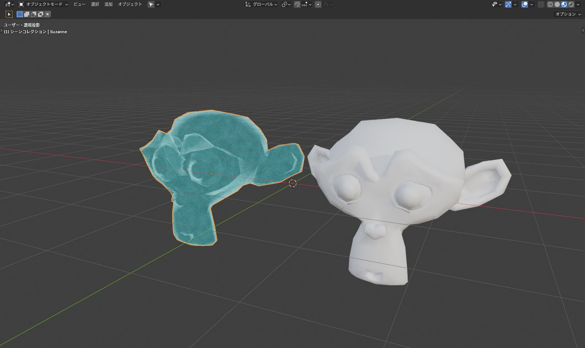
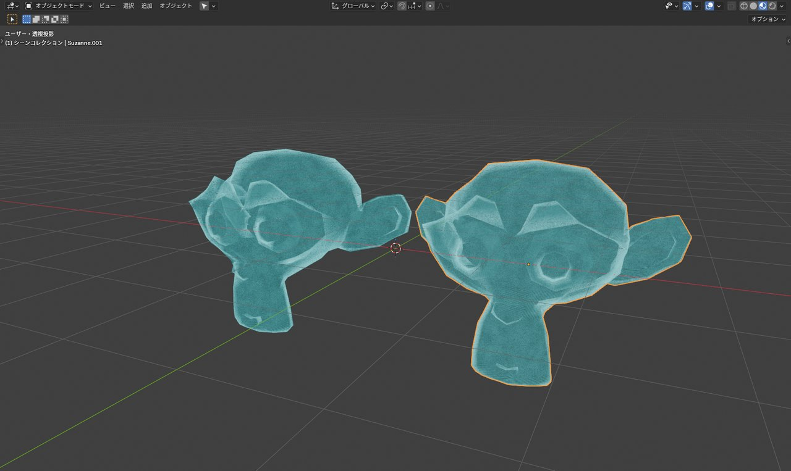
- 材質の付いたスザンヌを選ぶ
- 「マテリアルライブラリ管理」＞「検索とライブラリ」＞「マテリアルカタログ」を開く
- 「カタログ名」を入れて「エントリー保存」を押す
- もう 1 つのスザンヌを選ぶ
- 「保存済みカタログ」で保存した名前を選び、「エントリー適用」を押す
見どころ：右の灰色のスザンヌが、左と同じホログラムの見た目になりました。保存した内容から新しい材質を作り直して、選んでいる物へ貼っています。
5-7. シーン内マテリアル整理
対象のマテリアルを決めて、割り当て・使っている物の選択・複製・置き換えなどをします。名前の条件で一括割り当てするルールや、シーン全体の割り当てを保存するバリアントもここです。
場所「マテリアルライブラリ管理」の下の見出しです。中に「対象マテリアル操作」「シーン材質とルール」（「シーン材質インデックス」「比較と置換」「割当ルール」）「シーンバリアント」があります。
| 表示 | 働き |
|---|---|
| アクティブオブジェクト材質 | 選んでいる物のマテリアルを表示します。「既存マテリアル選択」「マテリアル作成」で付け替えや新規作成ができます。 |
| 対象マテリアル | 操作の対象にするマテリアルを、「既存マテリアル選択」か「アクティブ材質を使用」で決めます。この見出しの「対象マテリアルへの操作」や「比較と置換」は、ここに入っているマテリアルに働きます。「レイヤー適用」など物の材質を変える操作は、選んでいる物の今のマテリアルに働き、物にマテリアルが無い時だけここのマテリアルを使います。プリセットからの作成などでも、作ったマテリアルの名前が自動で入ります。 |
| 名前／割当方式 | 名前の変更に使う名前と、どのスロットに入れるか（「アクティブスロット」「先頭スロット」「追加」「全スロット」）を決めます。 |
| 非破壊 | オンなら、上書きの前に複製を作り、元のマテリアルを残します。 |
| 対象マテリアルへの操作 | 「アクティブターゲット設定」「選択へ割当」「使用オブジェクト選択」「マテリアル割当解除」「ターゲット複製」「ターゲットローカライズ」「オブジェクト別ローカライズ」「ターゲット名称変更」「ターゲット再構築」「管理マテリアル一括再構築」「スロットクリーンアップ」「重複マテリアル統合」「ターゲット一式保護」「保護解除」があります。ローカライズは、共有のマテリアルを複製して、その物専用にすることです。 |
| シーン材質インデックス | シーン内のマテリアルを「インデックス検索」「インデックス範囲」「並び順」で一覧にします。「インデックス選択を使用」で対象にし、「インデックス使用者選択」で使っている物を選びます。 |
| 比較と置換 | 「比較元」と「対象マテリアル」を決め、「差分プレビュー」で違いを確かめてから「ターゲットへ置換」で付け替えます。「置換範囲」で、「選択オブジェクト」だけか「シーン全体」かを選びます。 |
| 割当ルール | 「ルール名」と「オブジェクト条件」「コレクション条件」「現在材質条件」を書いて「ルール保存」します。条件には Hair* のように * が使えます。「正規表現」をオンにすると、パターンで指定できます。「ルール範囲」で、選択中の物だけかシーン全体かを選びます。「保存済みルール」で選び、「ルールプレビュー」で当たる物を確かめてから「ルール適用」します。「ルール削除」、「ルールライブラリ書出し」「ルールライブラリ読込」「ルールライブラリ修復」もあります。 |
| シーンバリアント | シーン全体のマテリアルの割り当てと HDRI の状態を「バリアント名」で保存し（「バリアント保存」）、「保存済みバリアント」から選んで「バリアント適用」で戻します。いらない物は「バリアント削除」で消します。「シーンバリアントライブラリ」では、保存したバリアントをまとめて書き出し（「バリアントライブラリ書出し」）・読み込み（「バリアントライブラリ読込」）・修復（「バリアントライブラリ修復」）できます。 |
実例名前の条件で、当てはまる物だけに材質を一括で貼る（スザンヌ 3 つで試した様子）
「Hair で始まる物」のような条件をルールとして保存し、当てはまる物だけへ材質を貼ります。物が多いシーンで、1 つずつ選ぶ手間が省けます。
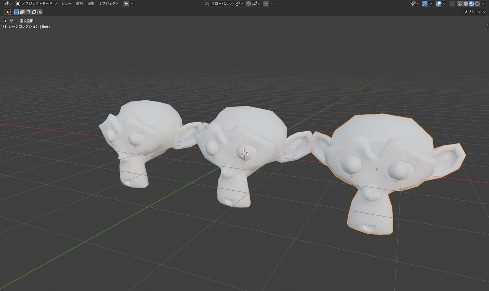
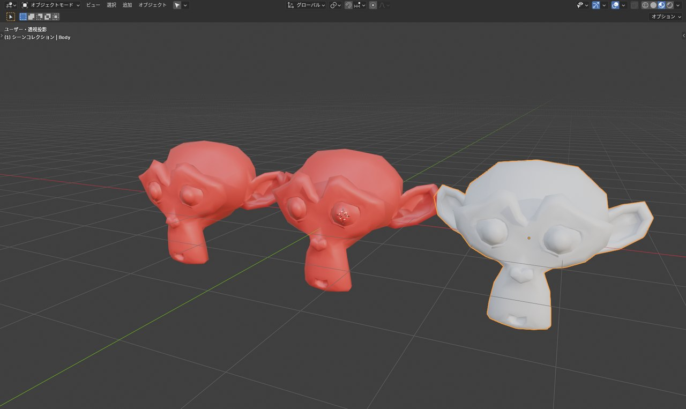
- 「シーン内マテリアル整理」を開き、「対象マテリアル」で貼る材質を選ぶ
- 「シーン材質とルール」＞「割当ルール」を開く
- 「オブジェクト条件」に Hair* と入れ、「ルール範囲」を「シーン全体」にする
- 「ルール保存」を押す
- 「ルールプレビュー」で当たる物を確かめてから「ルール適用」を押す
見どころ：名前が Hair で始まる左と中央の 2 つだけが赤くなり、名前の違う右の 1 つは灰色のままです。
5-8. HDRIワールド管理
HDRI 画像（周りの景色ごと明るさを記録した画像）で、背景と照明を作ります。
場所「シーン内マテリアル整理」の下の見出しです。開くと「ワールドとHDRI」の欄があります。
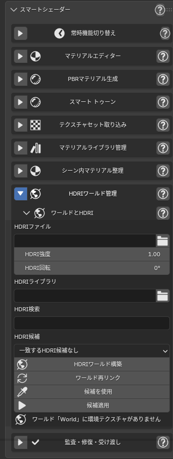
| 表示 | 働き |
|---|---|
| HDRIファイル | 使う HDRI 画像のファイルを指定します。 |
| HDRI強度／HDRI回転 | 背景の明るさと、向きの回転です。変えたら構築し直します。 |
| HDRIライブラリ／HDRI検索／HDRI候補 | HDRI の入ったフォルダを指定し、名前で探して候補を選びます。 |
| HDRIワールド構築 | 「HDRIファイル」の画像と「HDRI強度」「HDRI回転」の値で、今のシーンのワールド（背景と環境光）を作ります。 |
| ワールド再リンク | ワールドの HDRI が見つからない時、「HDRIライブラリ」のフォルダから探して付け直します。 |
| 候補を使用／候補適用 | 「候補を使用」は選んだ候補を「HDRIファイル」欄へ入れます。「候補適用」はそのままワールドへ当てます。 |
- 「HDRIファイル」に画像を指定します。
- 「HDRI強度」と「HDRI回転」を決めます。
- 「HDRIワールド構築」を押します。
- 見え方を変える時は、値を変えてもう一度「HDRIワールド構築」を押します。
実例HDRI の画像で背景と映り込みを作る「HDRIワールド構築」（スザンヌで試した様子）
周りの景色を写した HDRI 画像からワールド（背景と環境の光）を組みます。金属などの映り込みも景色に合わせて変わります。
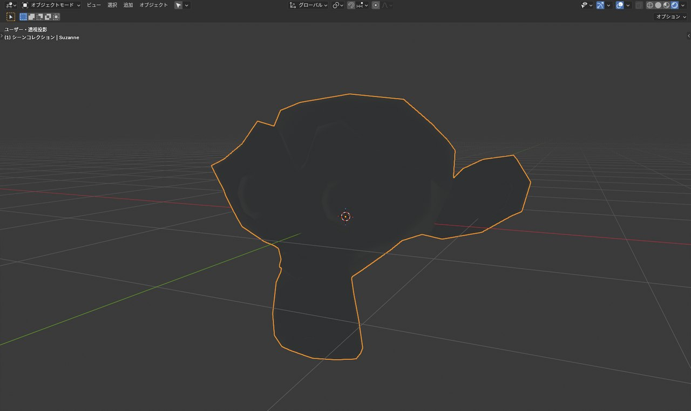
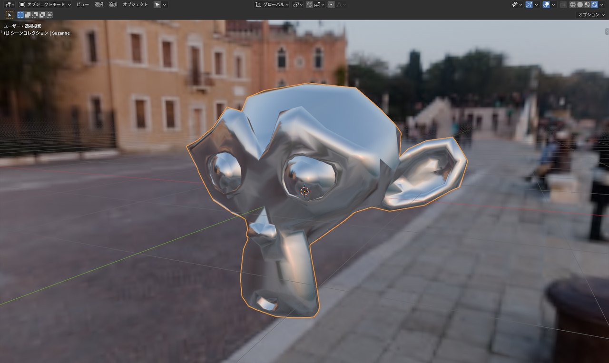
- スザンヌに金属の材質を貼っておく（例：「PBRマテリアル生成」の「ヘアラインメタル」）
- 「Smart Shader」タブ ＞「HDRIワールド管理」＞「ワールドとHDRI」を開く
- 「HDRIファイル」で HDRI 画像（.exr / .hdr）を選ぶ
- 「HDRIワールド構築」を押す
見どころ：暗い灰色だった背景が HDRI に写った景色になり、金属のスザンヌにもその景色が映り込みました。明るさと向きは、同じ欄の「HDRI強度」「HDRI回転」を変えて、もう一度「HDRIワールド構築」を押します。
実例場所が変わった HDRI を探して付け直す「ワールド再リンク」（スザンヌで試した様子）
HDRI の画像を別のフォルダへ移すと、ワールドが画像を見つけられなくなります。移した先のフォルダを教えると、同じ名前の画像を探して付け直します。
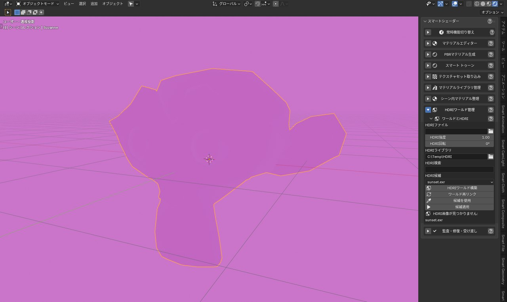
- 「HDRIワールド管理」＞「ワールドとHDRI」を開く
- いちばん下の状態の行を見る（画像が見つからないと、その旨が出る）
- 「HDRIライブラリ」に、画像を移した先のフォルダを指定する
- 「ワールド再リンク」を押す
見どころ：ピンク色になっていた背景に景色が戻り、パネルのいちばん下の状態の行も「HDRI準備完了」に変わりました。「HDRI強度」「HDRI回転」の値はそのまま引き継がれます。
5-9. 監査・修復・受け渡し
マテリアルの点検と一括修復、ZIP やマニフェスト（中身を書いた JSON ファイル）での受け渡し、保存先と同梱機能の設定をまとめています。
場所いちばん下の見出しです。中に「監査とノード調査」「シーンドクター」「受け渡しと参照」「設定」があります。
| 表示 | 働き |
|---|---|
| 監査とノード調査 | 「アクティブ監査」「ライブラリ監査」で点検します。「出力正規化」で最低限のノード構成に整え、「自己診断実行」で環境を確かめます。 |
| 最終レポート | 点検・修復・書き出しなどの結果が書かれる欄です。ボタンを押した後に何が起きたかを確かめます。 |
| シーンドクター | 「診断範囲」「診断フィルタ」「上限」「欠損画像を再リンク」を決め、「修復プレビュー」で確かめてから「修復実行」を押すと、見つからない画像の付け直し、色空間の補正、配線、ノードの整列をまとめて行います。「最終レポート」の「修復前欠損」「修復後欠損」で、直る前と後の数を比べられます。「欠損画像を再リンク」がオンの時は「検索フォルダ」も出ます。 |
| バンドル書出し／バンドル読込 | マテリアルと使っている画像を 1 つの ZIP にまとめ、別の場所で元に戻します。 |
| 材質マニフェスト書出し／シーンマニフェスト書出し／材質マニフェスト読込／シーンマニフェスト読込 | 「材質マニフェスト」はマテリアル 1 つ分（選んでいる物の今のマテリアル）を、「シーンマニフェスト」はシーン全体のマテリアルと割り当てを、JSON で書き出し・読み込みます。 |
| カバレッジ出力 | 機能の対応表を Blender のテキストとして出力します。 |
| 設定 | 「永続保存」の「ライブラリ保存先」と、「同梱機能」（「マテリアルライブラリ」「数式コントローラー」「PBR ルックデブ」）ごとの「このオンデマンド機能を有効化」があります。 |
実例リンク切れでピンクになった材質を、まとめて直す「シーンドクター」（立方体で試した様子）
ファイルを移すと、見つからなくなった画像がピンク色で表示されます。シーンドクターは、指定したフォルダから画像を探して付け直し、色空間や配線もまとめて整えます。
- 「監査・修復・受け渡し」＞「シーンドクター」を見る
- 「診断範囲」を選ぶ（ここではシーン全体）
- 「欠損画像を再リンク」をオンのままにし、「検索フォルダ」に画像が今あるフォルダを指定する
- 「修復プレビュー」で確かめてから「修復実行」を押す
見どころ：ピンク色だった立方体に、レンガの模様が戻りました。「最終レポート」には、修復前欠損: 1、修復後欠損: 0、再リンク成功: 1 と書かれます。
そのほかの画面
6. よく使う手順
プリセットでマテリアルを付ける
選んだ物に、見本画像を見ながら選んだ見た目を付けます。
- 3D ビューで物を選びます。
- 「PBRマテリアル生成」を開きます。
- 「プレビュー画像から選択」を押します。
- 一覧で見本の画像を押します。
結果：新しいマテリアルが作られて選んだ物に貼られ、一覧が閉じます。
アニメ風のトゥーンマテリアルを作る
キャラクターに段階影の見た目を付けます。
- メッシュを選びます。
- 「スマート トゥーン」を開きます。
- 「対象」の「トゥーンマテリアルを作成」を押します。
- 「ゾーンマップ」の「ゾーン数」で段階の数を決め、「ゾーンランプ」で色を調整します。
- 必要なら「ハイライトを有効化」や「リムライト」の設定を調整します。
結果：段階影のトゥーンマテリアルができます。設定を変えると、すぐ見た目に反映されます。
テクスチャ一式からマテリアルを作る
ダウンロードしたテクスチャのフォルダから、自動で配線されたマテリアルを作ります。
- 「テクスチャセット取り込み」を開きます。
- 「検索フォルダ」にテクスチャのフォルダを指定します。
- 「取込方式」は「自動グループ」のままにします。
- 「セット診断」を押し、選ばれる画像を確かめます。
- 「セットから構築」を押します。
結果：画像がつながった新しいマテリアルができます。
リンク切れの画像を直す
ファイルを移した後に見つからなくなった画像を付け直します。
- 「テクスチャセット取り込み」を開きます。
- 「対象範囲」を選びます。シーン全体を直す時は「シーン全体」にします。
- 「検索フォルダ」に、画像が今ある場所を指定します。
- 「テクスチャ再リンク」を押します。
- 「監査・修復・受け渡し」の「最終レポート」で結果を確かめます。
結果：同じファイル名の画像が見つかった所は、付け直されます。
HDRI で照明を作る
見た目の確認用に、背景と照明をすぐ用意します。
- 「HDRIワールド管理」を開きます。
- 「HDRIファイル」に HDRI 画像を指定します。
- 「HDRI強度」と「HDRI回転」を決めます。
- 「HDRIワールド構築」を押します。
- 見え方を変える時は、値を変えてもう一度「HDRIワールド構築」を押します。
結果：シーンのワールドが HDRI の背景と照明になります。
トゥーンの設定を別のマテリアルへ写す
作ったトゥーンの調整を、ほかのマテリアルにも使います。
- 写したい設定を持つマテリアルの物を選びます。
- 「スマート トゥーン」の「コピー/ペースト」で「スマート トゥーン設定をコピー」を押します。
- 貼り付け先のマテリアルの物を選びます。
- 「スマート トゥーン設定をペースト」を押します。
結果：同じ設定が貼り付け先のマテリアルに入ります。
今の材質に雪や錆を重ねる
材質を作り直さずに、汚れや積雪を足します。
- 物を選びます。
- 「PBRマテリアル生成」の「スマートレイヤーとマスク」を見ます。
- 「レイヤー」で種類（例：「雪レイヤー」）を選びます。
- 「レイヤー強度」を決めます。
- 「レイヤー適用」を押します。
結果：選んでいる物の今の材質の上にレイヤーが重なります。「非破壊」がオンなら元の材質は別に残り、重ねたコピーが貼られます。
トゥーンの陰の向きを変える
シーンのライトを使わずに、光の来る向きを決めます。
- トゥーンマテリアルの付いた物を選びます。
- 「ライト方向」の「方向用エンプティを作成」を押します。
- できた矢印の Empty を、光を当てたい方向へ動かします。
- 物と Empty を一緒に選び、「選択から方向を同期」を押します。
結果：Empty のある方向から光が当たる陰になります。Empty を動かしたら、もう一度押します。
7. 困った時
- 「Smart Shader」タブが見つかりません。
- 3D ビューで N キーを押してサイドバーを開き、右端のタブを確かめてください。シェーダーエディターなど、ほかのエディターのサイドバーにも同じタブが出ます。
- 「PBR ルックデブ」などの欄を開くと、「読み込み」ボタンだけが出ます。
- 「PBR ルックデブ」「マテリアルライブラリ」などの同梱機能は、使う時に読み込む作りです。「読み込み」を押すと使えるようになります。
- 「この機能は無効です」と出ます。
- 「監査・修復・受け渡し」の「設定」→「同梱機能」で、その機能の「このオンデマンド機能を有効化」をオンにしてください。
- ボタンを押した結果はどこで分かりますか。
- 「監査・修復・受け渡し」の「最終レポート」に、処理の結果が書かれます。
- 元のマテリアルを壊さずに試したいです。
- 「シーン内マテリアル整理」の「非破壊」をオンにしてください。上書きの前に複製を作るので、元のマテリアルが残ります。
- 「シェーダーノードを再構築」はいつ押せばよいですか。
- 生成されたノードを手で消した時や、壊れた時だけです。ふだんの調整は、設定を変えるだけで反映されます。
- 掃除で大事なマテリアルを消したくありません。
- そのマテリアルを対象にして「ターゲット一式保護」を押すと、画像やノードグループも含めて掃除から守られます。掃除の前は「クリーンアッププレビュー」で候補を確かめてください。
- マテリアルの枠が 2 つ以上ある物では、どこに入りますか。
- 枠が 2 つ以上ある時は「適用スロット」のボタンが出るので、入れる枠を選べます。このボタンは「割当方式」が「アクティブスロット」の時に押せます。
- HDRI の明るさを変えても、見た目が変わりません。
- 「HDRI強度」「HDRI回転」は、「HDRIワールド構築」を押した時に使われます。値を変えたら、もう一度「HDRIワールド構築」を押してください。
アドオンが出ない・日本語にならない、など全部のアドオンに共通のことは、全体仕様書の「困った時」を見てください。
8. 用語集
- マテリアル
- 物の色・つや・凹凸など、見た目を決める設定のまとまりです。
- マテリアルスロット
- 1 つの物にマテリアルを入れておく枠です。1 つの物に複数持てます。
- ノード
- マテリアルの中身を作る部品です。線でつないで見た目を組み立てます。
- Principled BSDF
- Blender の標準の材質ノードです。色や粗さなどの画像をここへつなぎます。
- PBR
- 現実の光の当たり方に近づけた見た目の作り方です。
- NPR／トゥーン
- 写実ではない、絵やアニメのような見た目のことです。
- ゾーン
- トゥーンの影の段階 1 つ 1 つのことです。暗い方から順に番号が付きます。
- リムライト
- 物の輪郭を細く光らせる光です。
- HDRI
- 周りの景色と明るさを記録した画像です。背景と照明に使います。
- テクスチャ
- マテリアルに使う画像です。色・粗さ・凹凸などの画像が一式になっていることが多いです。
- リンク切れ
- 画像の置き場所が変わり、Blender が画像を見つけられない状態です。
- 色空間（Non-Color）
- 画像を色として扱うかどうかの設定です。粗さや法線の画像は Non-Color にします。
- 保持（Fake User）
- どこにも使われていないマテリアルでも、保存時に消えにくくする設定です。
- アセット
- アセットブラウザーから別のファイルでも使えるようにした部品です。
- マニフェスト
- マテリアルの中身を書いた JSON ファイルです。作り直しや受け渡しに使います。
- 正規表現
- 名前の条件を、記号を使ったパターンで書く方法です。
9. 付録：版と確認値・できないこと
| アドオン | SmartShader Suite（smart_shader_suite） |
|---|---|
| 版 | 1.0.0 |
| ZIP | SmartShaderSuite_1.0.0.zip |
| 大きさ | 11,698,863 バイト |
| SHA256 | b1ffa15b540a4a20380da291fbf09135291e2db297f9048fd6309de3b7ceb1e8 |
できないこと・注意
- 「ビューポートクリックで取得」は 3D ビューのサイドバーからだけ使えます。
- 「写真からPBR」で作るのは調整用の下地です。写真の材質を完全には再現しません。
- スマート トゥーンは、選んでいる物にマテリアルが無い時は「対象」の欄だけが出ます。
- スマート トゥーンの「ベースソース」を「PBR/FXプリセット」にすると、「ゾーンマップ」の欄は出ません。
- スマート トゥーンの「ライト方向」の欄は、「ライティング入力」が「トゥーン方向」の時だけ出ます。
- 「スマート トゥーン設定をペースト」は、トゥーン設定を受け取れるマテリアルを選んでいて、コピーした内容がある時だけ押せます。
- 「適用スロット」は、物にマテリアルの枠が 2 つ以上ある時などに出ます。
- 「PBR ルックデブ」「マテリアルライブラリ」は、「読み込み」を押すまで中身が出ません。
- 「HDRI強度」「HDRI回転」は、構築した後に変えただけでは効きません。もう一度「HDRIワールド構築」を押します。
SmartShader Suite 解説書 v1.0.0 ／ 2026-11-18 作成